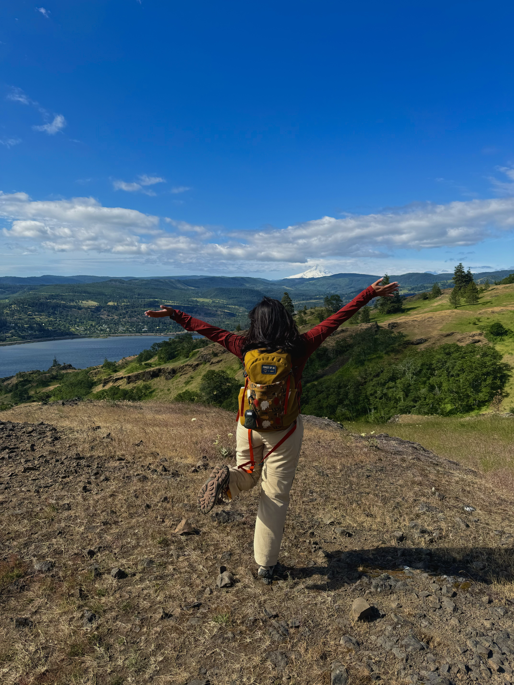
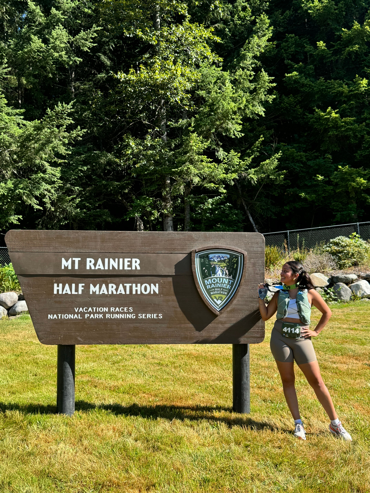
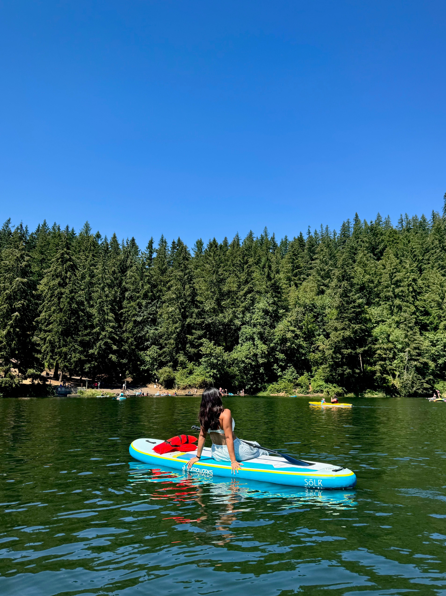
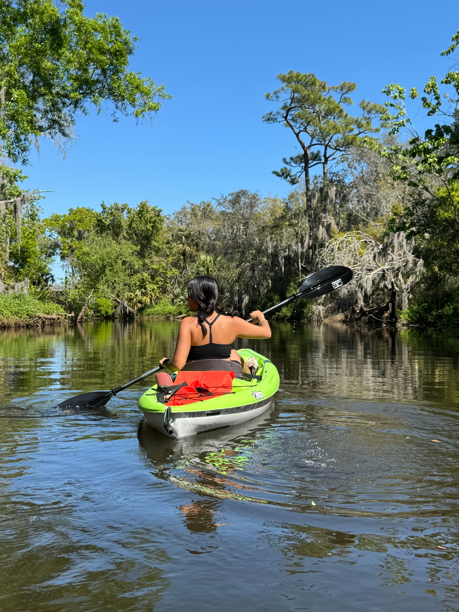
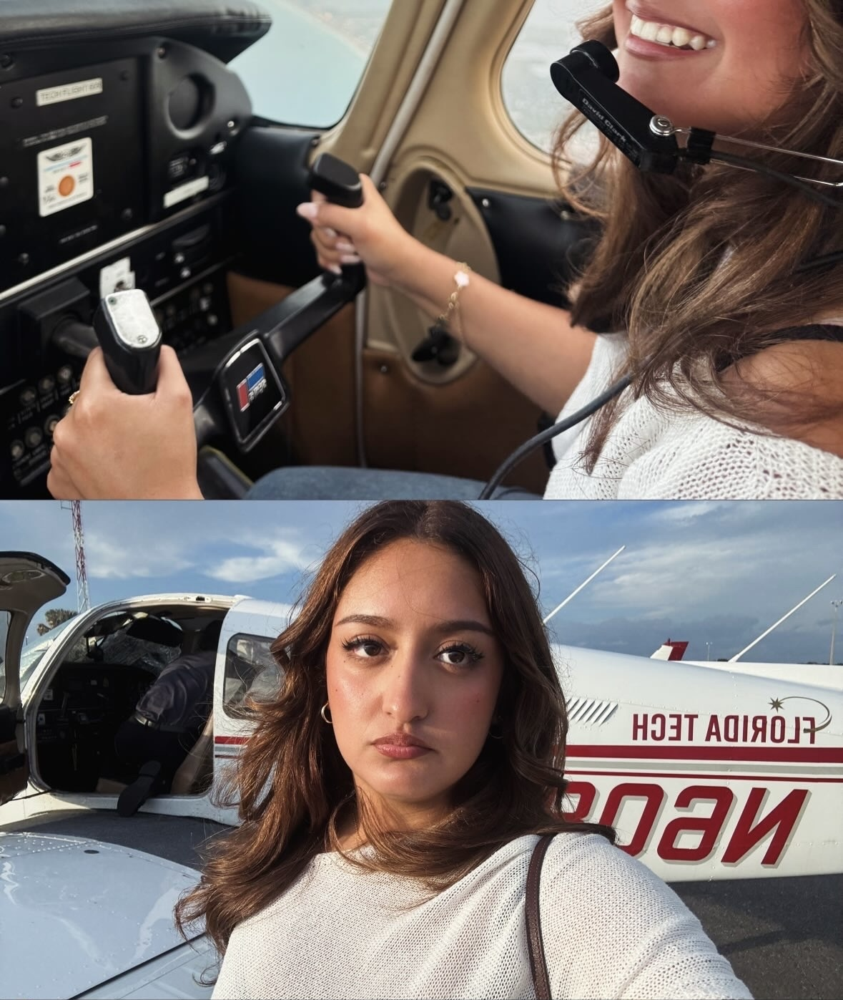
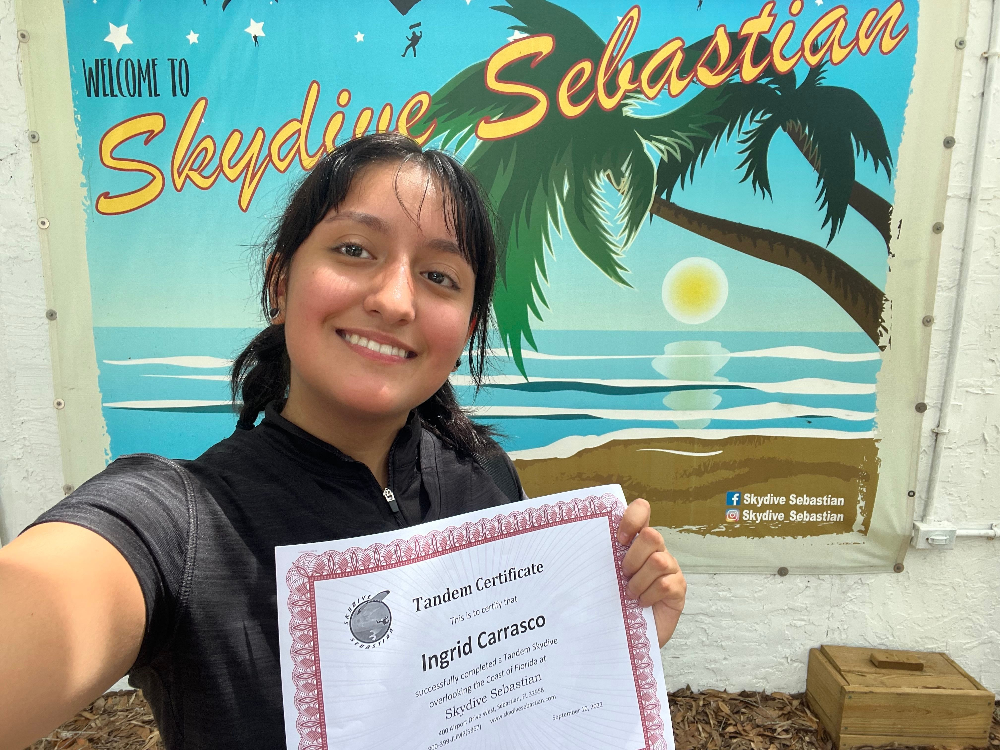
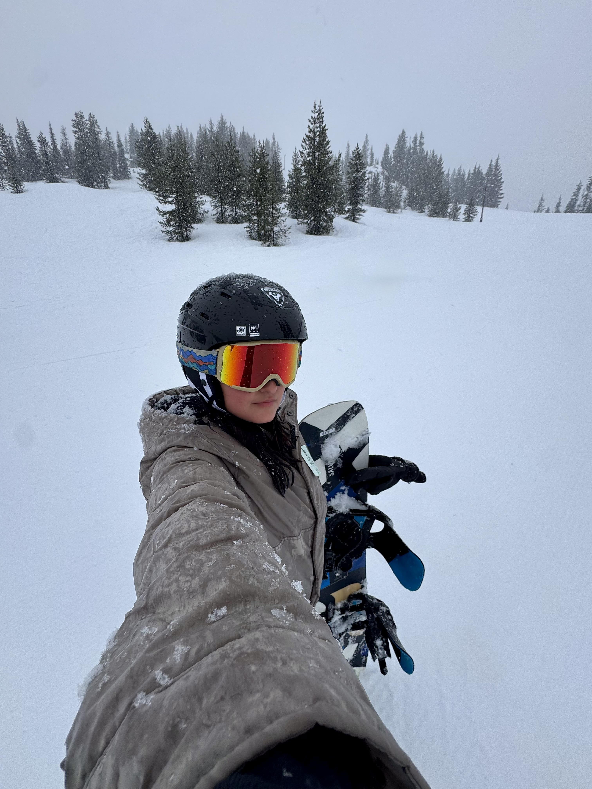

Biography
I am an incoming M.S. student in Earth Sciences with a concentration in Geophysics at the University of Oregon. My academic background is in planetary science, with interests in exoplanet habitability, planetary atmospheres, geophysics, instrumentation, and the physical processes that shape worlds over time. I am especially drawn to questions about how planets and moons evolve, what conditions make environments habitable, and how Earth-based science can help us understand other planetary systems.
I was born and raised in Oregon, and the landscapes of the Pacific Northwest have always shaped the way I see science and the natural world. Growing up around mountains, forests, rain, rivers, and changing terrain gave me an early appreciation for Earth as an active and dynamic planet. I am also proud of my Mexican heritage. I am the first person in my family to be born in the United States, and as the oldest of three, I have carried both responsibility and gratitude with me through my academic path.
Outside of school and research, I love hiking, running, paddleboarding, kayaking, snowboarding, dancing, watching movies, and trying experiences that make life feel larger. I have flown a plane, gone skydiving, ridden motorcycles, and made it a goal to keep saying yes to things that challenge me. More than anything, I want my life to feel full of movement, people, places, stories, and memories. Life is meant to be lived.
At a glance
- Born and raised in Oregon
- Graduated from Florida Tech
- Mexican heritage and oldest of three daughters
- Philanthropic lifestyle
- Incoming University of Oregon graduate student
- Planetary science and geophysics background
Outside of academics






